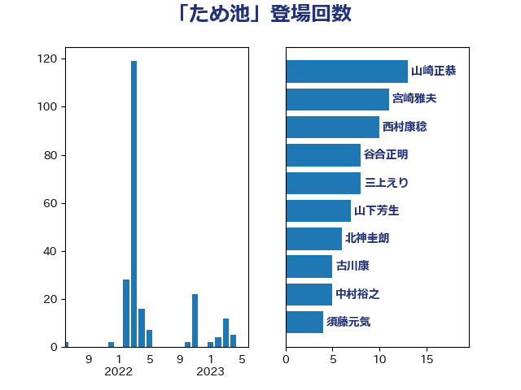

単語「ため池」

| 山崎正恭 | 公明党 | 13 回 |
| 宮崎雅夫 | 自由民主党 | 11 回 |
| 西村康稔 | 自由民主党 | 10 回 |
| 谷合正明 | 公明党 | 8 回 |
| 三上えり | 立憲民主党 | 8 回 |
| 山下芳生 | 日本共産党 | 7 回 |
| 北神圭朗 | 無所属 | 6 回 |
| 古川康 | 自由民主党 | 5 回 |
| 中村裕之 | 自由民主党 | 5 回 |
| 須藤元気 | 無所属 | 4 回 |
| 金子恵美 | 立憲民主党 | 4 回 |
| 野村哲郎 | 自由民主党 | 4 回 |
| 進藤金日子 | 自由民主党 | 4 回 |
| 空本誠喜 | 日本維新の会 | 4 回 |
| 稲津久 | 公明党 | 4 回 |
| 渡辺創 | 立憲民主党 | 4 回 |
| 大串博志 | 立憲民主党 | 4 回 |
| 下野六太 | 公明党 | 4 回 |
| 野中厚 | 自由民主党 | 3 回 |
| 清水貴之 | 日本維新の会 | 3 回 |
| 中川宏昌 | 公明党 | 3 回 |
| 田村貴昭 | 日本共産党 | 2 回 |
| 山口壯 | 自由民主党 | 2 回 |
| 長友慎治 | 国民民主党 | 1 回 |
| 野間健 | 立憲民主党 | 1 回 |
| 野上浩太郎 | 自由民主党 | 1 回 |
| 谷公一 | 自由民主党 | 1 回 |
| 菅義偉 | 自由民主党 | 1 回 |
| 舟山康江 | 国民民主党 | 1 回 |
| 秋野公造 | 公明党 | 1 回 |
| 武部新 | 自由民主党 | 1 回 |
| 日下正喜 | 公明党 | 1 回 |
| 平口洋 | 自由民主党 | 1 回 |
| 堤かなめ | 立憲民主党 | 1 回 |